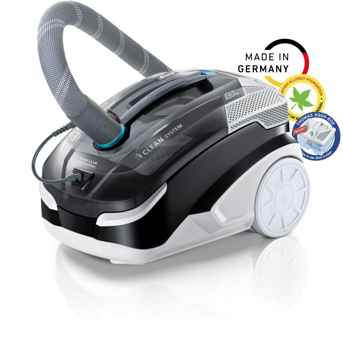
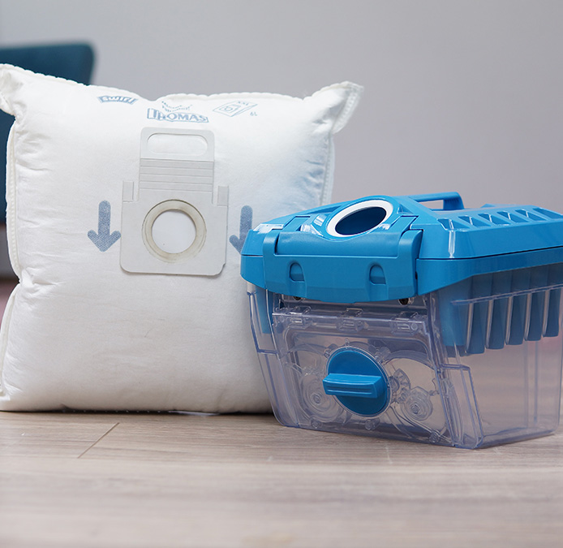

<!DOCTYPE html>
<html lang="ua"></html>
<head>
  <meta charset="UTF-8"/>
  <meta name="viewport" content="width=device-width, initial-scale=1.0"/>
  <meta http-equiv="X-UA-Compatible" content="ie=edge"/>
  <title>Thomas Starclean</title>
</head>
<body>
  <style>* {
  margin: 0;
  padding: 0;
  box-sizing: border-box;
}
*:before, *:after {
  box-sizing: border-box;
}

.tms-img-resp {
  display: inline-block;
  max-width: 100%;
  height: auto;
}

.tms-h1 {
  font-family: Arial, sans-serif;
  font-style: normal;
  font-weight: bold;
  font-size: 64px;
  line-height: 110%;
  color: #3D505A;
}

.tms-h2 {
  font-family: Arial, sans-serif;
  font-style: normal;
  font-weight: bold;
  font-size: 52px;
  line-height: 110%;
  color: #3D505A;
}

.tms-large-p {
  font-family: Arial, sans-serif;
  font-style: normal;
  font-weight: normal;
  font-size: 28px;
  line-height: 120%;
  letter-spacing: -0.01em;
  color: #3D505A;
  padding-bottom: 20px;
}

.tms-medium-p {
  font-family: Arial, sans-serif;
  font-style: normal;
  font-weight: normal;
  font-size: 24px;
  line-height: 130%;
  letter-spacing: -0.02em;
  color: #3D505A;
}

.tms-small-p {
  font-family: Arial, sans-serif;
  font-style: normal;
  font-weight: bold;
  font-size: 18px;
  line-height: 135%;
  letter-spacing: -0.01em;
  color: #3D505A;
}

.tms-main-container {
  max-width: 1520px;
  margin: 0 auto;
  position: relative;
}

.tms-section {
  margin-bottom: 200px;
  padding: 0 50px 0 50px;
}

.tms-i {
  position: relative;
  display: block;
  text-align: left;
  padding-left: 82px;
}
.tms-i:before {
  content: " ";
  left: 0;
  top: -8px;
  position: absolute;
  height: 50px;
  width: 50px;
  background: url(img/tms-li-icon.svg) 0 0 no-repeat;
  display: inline-block;
}

.tms-chest {
  display: grid;
  grid-template-columns: 1fr 1fr;
  grid-gap: 98px;
  justify-content: space-between;
  align-items: center;
}
.tms-chest .tms-h2 {
  margin-bottom: 24px;
}
.tms-chest img, .tms-chest video {
  border-radius: 12px;
}

.tms-reverse .tms-content {
  grid-column-start: 2;
  grid-row-start: 1;
}

#tms-section-1 {
  background: url(img/tms-section-1-bg.jpg) left bottom no-repeat;
  background-size: cover;
  height: 100vh;
  display: grid;
  grid-template-columns: 1fr;
  align-content: space-between;
}
#tms-section-1 .tms-logo {
  text-align: center;
  padding-top: 100px;
}
#tms-section-1 .tms-content {
  text-align: center;
}
#tms-section-1 .tms-content .tms-large-p {
  width: 70%;
  margin: 32px auto 0;
}

#tms-section-2 .tms-vc {
  text-align: center;
}
#tms-section-2 .tms-h1 {
  text-align: center;
  margin-top: 48px;
}
#tms-section-2 .tms-list {
  margin-top: 79px;
  display: grid;
  grid-template-columns: repeat(4, 1fr);
  justify-content: space-between;
}
#tms-section-2 .tms-listItem {
  display: grid;
  grid-template-columns: 95px auto;
  align-items: center;
  justify-content: center;
}
#tms-section-2 .tms-listItem img {
  padding: 8px;
  background: #F6F6F6;
  border-radius: 50%;
  box-shadow: 5px 5px 25px 1px rgba(39, 92, 141, 0.2);
}

#tms-section-3 .tms-h1, #tms-section-11 .tms-h1 {
  text-align: center;
}
#tms-section-3 .tms-list, #tms-section-11 .tms-list {
  margin-top: 95px;
  display: grid;
  grid-template-columns: 1fr 1fr;
  grid-gap: 46px;
}

@media only screen and (max-width: 992px) {
  .tms-chest {
    grid-template-columns: 1fr;
    justify-items: center;
  }

  .tms-reverse .tms-content {
    grid-column-start: 1;
  }

  .tms-section {
    margin-bottom: 100px;
  }

  #tms-section-1 .tms-content .tms-large-p {
    width: 100%;
  }

  #tms-section-2 .tms-list {
    grid-template-columns: 1fr;
    grid-gap: 46px;
  }

  #tms-section-3 .tms-list, #tms-section-11 .tms-list {
    grid-template-columns: 1fr;
  }
}
@media only screen and (max-width: 480px) {
  .tms-h1 {
    font-size: 32px;
  }

  .tms-h2 {
    font-size: 26px;
  }

  .tms-large-p {
    font-size: 18px;
  }

  .tms-medium-p {
    font-size: 16px;
  }

  .tms-small-p {
    font-size: 14px;
  }
}
  </style>
  <div class="tms-main-container">
    <div class="tms-section" id="tms-section-1">
      <div class="tms-logo"></div>
      <div class="tms-content">
        <div class="tms-h1">Миючий пилосос із системою </div>
        <div class="tms-h1">водяної фільтрації</div>
        <div class="tms-large-p">для чистоти та здоров'я у вашому домі!</div>
      </div>
    </div>
    <div class="tms-section" id="tms-section-2">
      <div class="tms-vc"></div>
      <div class="tms-content">
        <div class="tms-h1">THOMAS STARCLEAN</div>
        <div class="tms-list">
          <div class="tms-listItem">
            <div class="tms-medium-p">Сухе прибирання</div>
          </div>
          <div class="tms-listItem">
            <div class="tms-medium-p">Вологе прибирання</div>
          </div>
          <div class="tms-listItem">
            <div class="tms-medium-p">Миття паркету</div>
          </div>
          <div class="tms-listItem">
            <div class="tms-medium-p">Збирання рідин</div>
          </div>
        </div>
      </div>
    </div>
    <div class="tms-section" id="tms-section-3">
      <div class="tms-h1">Вирішує всі важливі завдання </div>
      <div class="tms-h1">з прибирання дому</div>
      <div class="tms-list">
        <div class="tms-large-p tms-i">ЯК зробити повітря в домі на 100% чистим і свіжим?</div>
        <div class="tms-large-p tms-i">ЯК вимити підлогу до чистоти і глянцю?</div>
        <div class="tms-large-p tms-i">ЯК випрати й оновити килими?</div>
        <div class="tms-large-p tms-i">ЯК ефективно й безпечно, без зайвої води помити паркет?</div>
        <div class="tms-large-p tms-i">ЯК помити скляні і дзеркальні поверхні?</div>
        <div class="tms-large-p tms-i">ЯК зробити ретельне вологе чищення м'яких меблів?</div>
        <div class="tms-large-p tms-i">ЯК легко прибрати випадкові забруднення і запобігти появі плям?</div>
        <div class="tms-large-p tms-i">ЯК швидко зібрати великі обсяги води в аварійній ситуації?</div>
      </div>
    </div>
    <div class="tms-section tms-chest">
      <div class="tms-content">
        <div class="tms-h2">THOMAS Starclean — ідеально чисте повітря</div>
        <div class="tms-large-p"><strong>Зволоження й очищення повітря від пилу на 99.99%, від пилку — на 100% завдяки унікальному водяному фільтру AquaBOX із інноваційною технологією придушення пилу Wet-Jet.</strong></div>
        <div class="tms-large-p">Для початку прибирання необхідний всього 1 літр звичайної води. Після закінчення прибирання дрібний пил, сміття, волосся, шерсть тварин та інші алергени просто виливаються разом із брудною водою.</div>
        <div class="tms-large-p">В результаті ви отримуєте чисту оселю, а замість запаху пилу — ідеально очищене повітря.</div>
      </div>
      <div class="tms-media">
        <video class="tms-img-resp" src="img/tms-section-4-video.mp4" poster="img/tms-section-4-bg.jpg" preload="auto" autoplay="true" loop="true" muted="muted"></video>
      </div>
    </div>
    <div class="tms-section tms-chest tms-reverse">
      <div class="tms-content">
        <div class="tms-h2">Зручне сухе прибирання навіть у найбільш незручних місцях</div>
        <div class="tms-large-p">Перемикна широка насадка з підсвічуванням підлога/килим, зі щіткою по всьому периметру насадки легко впорається з прибиранням будь-яких поверхонь навіть у найвіддаленіших і найтемніших місцях.</div>
        <div class="tms-large-p">Подовжена щілинна насадка допоможе зібрати пил і сміття між подушками диванів, із плінтусів і багетів, між меблями. Її довжина становить 360 мм, а зрізаний під кутом край насадки легко прибере пил у будь-яких зазорах, стиках і кутах.</div>
      </div>
      <div class="tms-media">
        <video class="tms-img-resp" src="img/tms-section-5-video.mp4" poster="img/tms-section-5-bg.jpg" preload="auto" autoplay="true" loop="true" muted="muted"></video>
      </div>
    </div>
    <div class="tms-section tms-chest">
      <div class="tms-content">
        <div class="tms-h2">Просте прибирання шерсті й волосся</div>
        <div class="tms-large-p">Турбощітка допоможе легко зібрати волосся, шерсть домашніх тварин і інше налипаюче сміття. Валик зі щіткою швидко обертається, збираючи все сміття з килима за один прохід без зайвих зусиль. Зручна знімна кришка передбачена для зручності чищення насадки.</div>
        <div class="tms-large-p">Насадка для м'яких меблів дозволяє з легкістю очистити дивани, крісла і т. п. від шерсті тварин, волосся й ниток. Широкий ниткопідйомник на насадці ретельно очищає поверхні від будь-якого сміття.</div>
      </div>
      <div class="tms-media">
        <video class="tms-img-resp" src="img/tms-section-6-video.mp4" poster="img/tms-section-6-bg.jpg" preload="auto" autoplay="true" loop="true" muted="muted"></video>
      </div>
    </div>
    <div class="tms-section tms-chest tms-reverse">
      <div class="tms-content">
        <div class="tms-h2">Миття килимів і м'яких меблів</div>
        <div class="tms-large-p">Широка миюча насадка здійснює ретельне вологе чищення килимів, відновлює висоту ворсу, швидко видаляє випадкові і застарілі забруднення.</div>
        <div class="tms-large-p">Вузька розпилювальна насадка виконує глибоке чищення м'яких меблів, ефективно видаляє плями, оновлює оббивку.</div>
      </div>
      <div class="tms-media">
        <video class="tms-img-resp" src="img/tms-section-7-video.mp4" poster="img/tms-section-7-bg.jpg" preload="auto" autoplay="true" loop="true" muted="muted"></video>
      </div>
    </div>
    <div class="tms-section tms-chest">
      <div class="tms-content">
        <div class="tms-h2">Миття твердих підлог і паркету</div>
        <div class="tms-large-p">Широка миюча насадка з адаптером для твердих підлог якісно і без розводів миє гладкі покриття для підлоги чистою водою, збирає відпрацьовану рідину в окрему ємність і просушує поверхню.</div>
        <div class="tms-large-p">Широка миюча насадка з адаптером і серветкою з мікроволокна дозволяє ефективно і дбайливо вимити паркет і ламінат із мінімальною кількістю води й одночасним висушуванням покриття.</div>
      </div>
      <div class="tms-media">
        <video class="tms-img-resp" src="img/tms-section-8-video.mp4" poster="img/tms-section-8-bg.jpg" preload="auto" autoplay="true" loop="true" muted="muted"></video>
      </div>
    </div>
    <div class="tms-section tms-chest tms-reverse">
      <div class="tms-content">
        <div class="tms-h2">Миття скляних і дзеркальних поверхонь і збирання води</div>
        <div class="tms-large-p">Спеціальна серветка з мікроволокна допомагає вимити скляні і дзеркальні поверхні, ретельно видаляючи пил і бруд без крапель і розводів.</div>
        <div class="tms-large-p">Можливість пилососа збирати великі обсяги води за короткий час, випадково розлиті рідини і мокре сміття допоможе мінімізувати пошкодження меблів і поверхонь від намокання і запобігти появі плям.</div>
      </div>
      <div class="tms-media">
        <video class="tms-img-resp" src="img/tms-section-9-video.mp4" poster="img/tms-section-9-bg.jpg" preload="auto" autoplay="true" loop="true" muted="muted"></video>
      </div>
    </div>
    <div class="tms-section tms-chest">
      <div class="tms-content">
        <div class="tms-h2">Додаткові рішення для THOMAS Starclean — ще більше можливостей для вас</div>
        <div class="tms-large-p"><strong>THOMAS DryBOX* </strong>— інноваційна система фільтрації з фракційним розділенням пилу для швидкого прибирання без підготовки і без втрати сили всмоктування. Комфортне прибирання, просте й гігієнічне очищення контейнера!</div>
        <div class="tms-large-p"> <strong>HEPA-мішок* </strong>для оперативного прибирання в будь-який зручний момент, а також для збирання грубого і специфічного сміття.</div>
        <div class="tms-small-p">*У комплектацію пилососа не входять.</div>
      </div>
      <div class="tms-media"></div>
    </div>
    <div class="tms-section tms-chest tms-reverse">
      <div class="tms-content">
        <div class="tms-h2">Преміум комплектація для бездоганної чистоти</div>
        <div class="tms-large-p">• Перемикна насадка килим/підлога зі світлодіодним підсвічуванням.</div>
        <div class="tms-large-p">• Турбощітка для швидкого збирання волосся і шерсті домашніх тварин.</div>
        <div class="tms-large-p">• Вузька насадка для ефективного збирання шерсті, пуху і волосся.</div>
        <div class="tms-large-p">• Подовжена (360 мм) щілинна насадка.</div>
        <div class="tms-large-p">• Широка миюча насадка з двома адаптерами.</div>
        <div class="tms-large-p">• Вузька миюча насадка.</div>
        <div class="tms-large-p">• Концентрат ProTex 500 мл для очищення текстильних поверхонь.</div>
      </div>
      <div class="tms-media">
        <video class="tms-img-resp" src="img/tms-section-11-video.mp4" poster="img/tms-section-11-bg.jpg" preload="auto" autoplay="true" loop="true" muted="muted"></video>
      </div>
    </div>
    <div class="tms-section" id="tms-section-11">
      <div class="tms-h1">Технічні характеристики THOMAS Starclean</div>
      <div class="tms-list">
        <div class="tms-large-p tms-i">Висока потужність двигуна — 1700 Вт</div>
        <div class="tms-large-p tms-i">Електронне управління на корпусі TouchTronic</div>
        <div class="tms-large-p tms-i">Пульт на рукоятці шланга для дистанційного управління двигуном</div>
        <div class="tms-large-p tms-i">2 положення паркування для комфортного зберігання, наприклад, у шафі</div>
        <div class="tms-large-p tms-i">Зручні гнізда на корпусі — насадки завжди під рукою</div>
        <div class="tms-large-p tms-i">Висока маневреність завдяки роликам EasyDrive — пилосос не потрібно носити в руках</div>
        <div class="tms-large-p tms-i">Великий радіус прибирання — 11 м від однієї розетки</div>
        <div class="tms-large-p tms-i">Автоматичне змотування кабелю</div>
        <div class="tms-large-p tms-i">НЕРА-фільтр, що миється</div>
        <div class="tms-large-p tms-i">Габарити: довжина — 486 мм, ширина — 318 мм, висота — 306 мм</div>
        <div class="tms-large-p tms-i">Вага — 8 кг</div>
      </div>
    </div>
  </div>
</body>